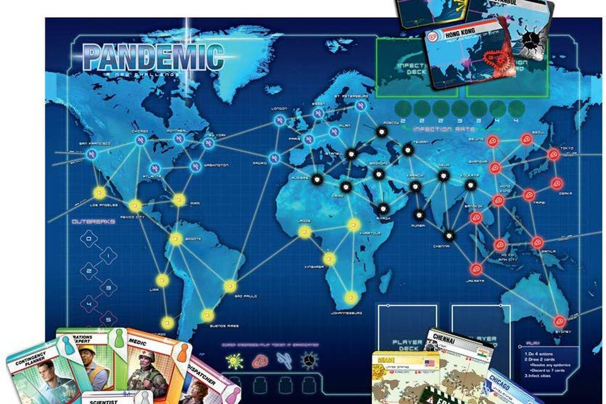

Pandemic is a cooperative board game developed by Z-Man Games. The goal of Pandemic is for the players, in their randomly selected roles, to work cooperatively to stop the spread of four diseases and cure them before a pandemic occurs. Pandemic setup consists of a game board representing a network connecting 48 cities on the map of the earth, two decks of cards (Player cards and Infection cards), four colors of cubes (each representing a different disease), six Research Stations, and a pawn for each player.
The text content of this site was legally borrowed from The Wikipedia for Pandemic (board game) on May 5, 2020